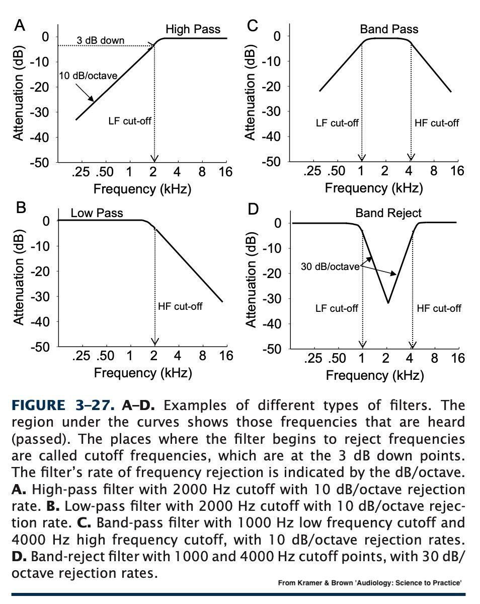
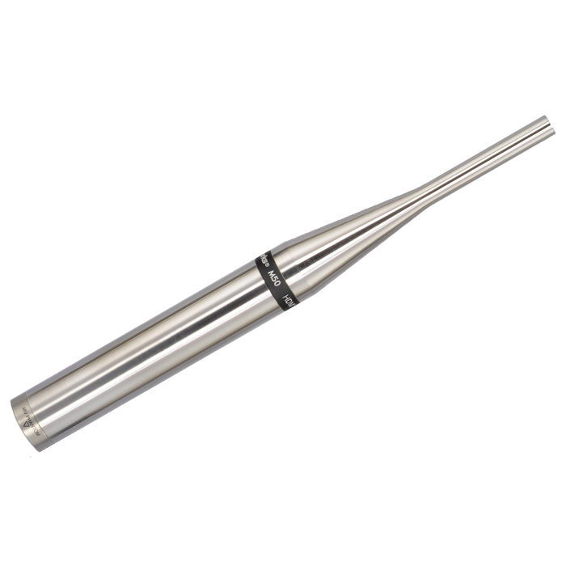

We know how to analyze it
We know how to measure it
Even how to modify it
… but all of that depends on having a good, clean signal
Room echo and feedback
Typing and mouse clicks
Background clatter
Wind Noise
Speech processes want to send the voice, not the noise!
Set the signal to 0
This will immediately remove all noise
… but it’s not going to preserve the signal particularly well
So, the question is how do we remove as much noise as we can without harming the signal we care about?
We’re going to talk about the ‘signal’, the ‘noise’, the ‘input’, and the ‘output’
Basic Filter Types
Filtering without Digital Signal Processing
Fancy Filtering
Avoiding the need for filtering
The Scourge of Clipping
Here, we’re talking signal processing
The filters are generally mathematical, rather than resonance-based
Generally, we’re doing complete removal, not enhancement and damping
High Pass
Low Pass
Band Pass
Band Stop (also ‘Band Reject’ and ‘Notch’)

They always have a ‘cutoff’ and a ‘slope’
The slope dictates how quickly sounds outside the cutoff are attenuated
There’s no such thing as a perfect filter in the frequency domain
Remove an annoying refrigerator noise at 350Hz
Get rid of all the information above 10kHz
Isolate the signal from 0 to 3000Hz
Remove a 3Hz fan noise
Extract 200 Hz around F1
Whole dissertations are made in improving the nature of computational noise filters
There are interesting artifacts (‘ringing’) which pop up when filters are poorly implemented, or when you’re trying to use edges that are too sharp
You can combine multiple filters together to get fancier
Implementing these with digital logic is non-trivial
But for now, know high pass, low pass, band pass, and band stop and what they mean
You can use analog electronic circuits to do filtering
Example: A capacitor and resistor, combined, allow high/low pass filtering
Capacitors allow higher frequencies through, and block lower frequencies
You can also low-pass by effectively inverting this, and giving the lower frequencies a separate path
This means that you don’t need computers to filter sound
No acoustical space or device is perfect
Rooms filter sound
Absorptive materials remove some frequencies and not otherse
… but most relevant here…
No microphone (or speaker) is perfect and responds linearly throughout the entire frequency spectrum
Cheap, tiny, or highly durable microphones and speakers tend to be worse



The ear canal and outer ear (pinna) filter the ear depending on sound localization
The Pinna amplifies sounds centered around 3000Hz
You will (almost) never control every filter in the chain from human to human
Changing microphones on the input may impact the performance of your system
Garbage in, Garbage Out
With modern digital signal processing, we can post-process sound in smarter ways
We can work in both the spectral domain and the temporal domain
“I know what the spectral shape of the noise is, so I’ll just subtract that from the input!”
This requires you to estimate the spectral shape of the noise accurately
It also requires you to designate which noise you’re dealing with right now
This is great if you have pre-determined noise types you know you’re going to face
“I’m going to estimate the spectral nature of the noise and the signal, and then create a filter which minimizes the difference between signal and estimate”
Uses statistical methods (mean squared error) to generate an optimal set of filter coefficients which makes the signal look most like what you think it should
It assumes the noise is invariant
It requires some knowledge of the desired signal
Sometimes, noise varies predictibly in the time domain
“Well, I know the signal is unpredictable, but this noise seems to be on a 5 Hz modulation cycle. Let’s design a quick filter which removes the type of noise that cycles at 5 Hz”
This allows us to better estimate the nature of the noise and filter it out
This presumes periodicity of modulation of the noise source!
“Let’s train a deep neural network model on a ton of clean speech, so it knows what the signal looks like, and then have it reconstruct the speech signal without the noise”
This is a reconstructive process, so it’s adding things to the input which weren’t originally present!
“Synthesize what this speech probably is without the noise”
Different models are required for different kinds of signals

‘Krisp’ is using ‘AI’, which I presume means neural models
Zoom is also using neural networks (possibly Krisp)
You can often “tune” the degree of noise cancellation
It’s slower and computationally more expensive
They’re often trained on specific types of noise
The latency and time-to-start of filtration is harder to control
When should we apply filtering if the noise and signal overlap?
The amount of gain reduction
What bias are you introducing into your signal processing?
Some meaningful signal may not be speech
Neural Network filtering is expensive, and is not guaranteed to reconstruct exactly what was said
All filtering is imperfect, and will either leave noise, or take signal, or both!
Put the microphone close to the thing which is producing the signal you need
Try to put barriers between noise sources and the microphone
Microphones have spatial patterns of response
“From which direction(s) does the microphone most readily pick up sound?”
Choose the right response pattern for the job!
Capture input from multiple microphones pointing towards and away from the signal
Input that comes in on all mics is probably noise
Input that comes in strongest on the signal mic probably signal
Now use one of the other filtering methods with this knowledge!

Arrange omnidirectional microphones in a known, geometric pattern
Each microphone picks up all the sounds in the room
Signals from different directions arrive at different times to different microphones
Signals are differentially weighted (via wild math) to effectively target a particular direction containing desirable signal
The summed output is now highly directional, and minimizes noise sources from other directions
The signal’s amplitude is greater than your capturable dynamic range
You lose the ‘tops’ of the waveform and sample a straight line of samples at the top of your


Anything in the spectral or cepstral domain is going to go wild
There’s no way to filter your way out of this because the input sucks
It also is very bad for speakers to play back clipped sound
If your amplifier can’t create the full dynamic range for playback, you’ll get clipping too
We want to remove as much noise as possible without removing signal
Many things filter sound, even without fancy digital methods
We can be very fancy about filtering, if we can spare some compute power
Life is better if you can optimize the input signal before you have to start filtering
Nothing will save you if you’re clipping
So, what does sound look like sitting on a computer’s disk?